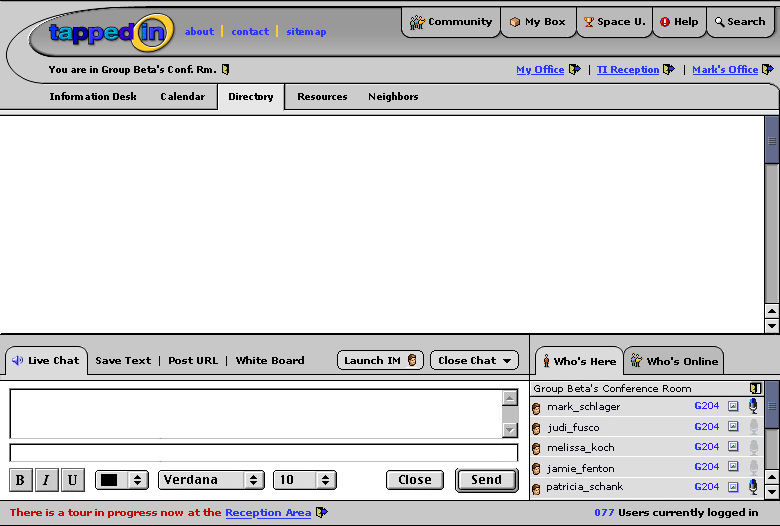
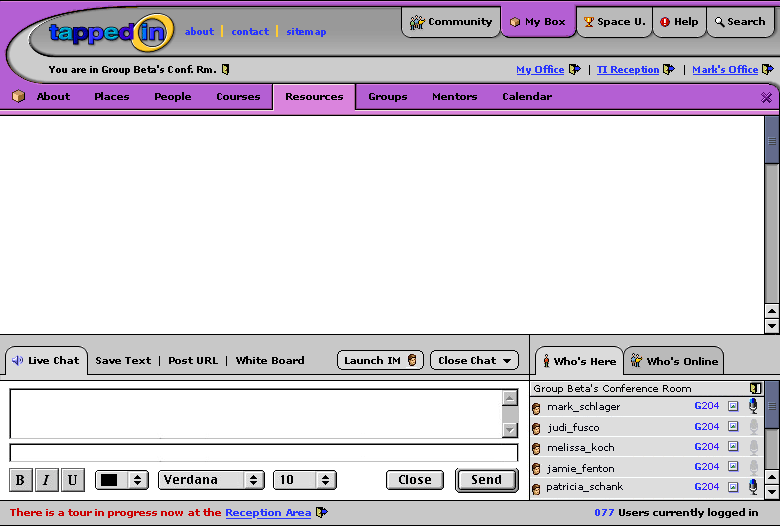

These designs reflect more of direction "A" than "B"- i.e. making more of a connection between the top tabs and the content window rather than laying the choices vertically per MacI.E. I found that it simply did not make sense to lay the tabs vertically- the expandable chat interface made it hard to justify laying things in that required vertical space. I also still believe that having these choices in the upper right mentally puts them in the right place.
I've used purple here to get us away from the yellow/blue palette which was safer but not realistic; ultimately we'll need to use colors besides yellow and blue, so that's why that has switched for now.
I think the "3-D" shadow/bevel technique works in some places here, but not all; it starts to feel a little less "application-like", but I think there is a balance, and I agree the old designs look too flat in comparison.
Enough talk.
I think the color swooping around the left side and down looks awesome. It's attractive in addition to being functional (adding continuity).
I'm with Patti. I really like the solution you came up with. I agree that it is a better use of space than putting it down the left side as the screen is currently set up. The way the selected subtab is highlighted is totally what I envisioned (e.g. Resources, Directory). And about curving the overlay per Aaron's comment below, I think that's a good idea. I'm not sure what the hubbub about the colors (purple vs. blue/yellow) is about.
Question: If i'm in My Box as in the 2nd picture how do I get back to the first screen shot? Clicking My Box again? This is coming from someone who hasn't used the original Tapped In much...
Zaz raises the questions that I've been pondering for the past half hour. It seems that we need a way to toggle back and forth between the room (Group Beta) and at least one tool (My Box). There is a lot of space on the right next to Neighbors (Group) and Calendar (My Box). Seems like you could move the My Box purple in a bit, keeping the X to close and indicate the grey of the room is clickable. Clicking My Box should get you back to exactly what you left (ie. I could be in the middle of opening a file or if the tool is Search, in the middle of a search string). It would be good if the purple My Box swirl was slightly higher than the grey so I could see the toggle affect more clearly. Does this make sense? Comments?
Melissa et al: Thanks for the comments. The general problem of clicking back to the room is something I need to figure out, definitely. The suggestion of moving the purple over a bit will work- but on the left side and not on the right (the scrollbar needs to be flush right for the frameset to work correctly). Judy- I don't want to move the purple swoosh too much further in on the left because of screen real estate but I'll see if I can adjust it a bit.
In looking at these now, they are starting to feel more cluttered than round 8. Bringing a 3D look to things I think begins to complicate things.\r\n\r\nAlso, one thought on the color-overlay: If it was curved on the left side-bottom (where the larger box icon is now) and exposed some of the grey underneath, that might help add to the sense of this being an overlay on the current room.
I like it in general! Good call Aaron in not putting things down the left hand side. Nitpicky things.... I'd like to see a little more purple showing in the swooshing part by the TI logo (just to give it a little more continuity).... I'm also confused as to how to get the group beta room back to the top layer too (and I've used TAPPED IN a heck of a lot Zaz!!!). In the very least when you have something in front of group beta's room you need a link where it says You are in Group Beta's conf. room (but I think it should be a little more than that).
